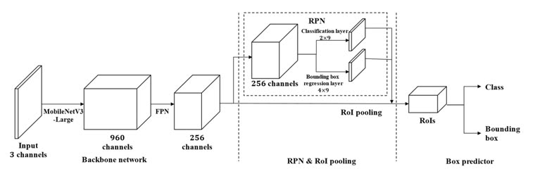
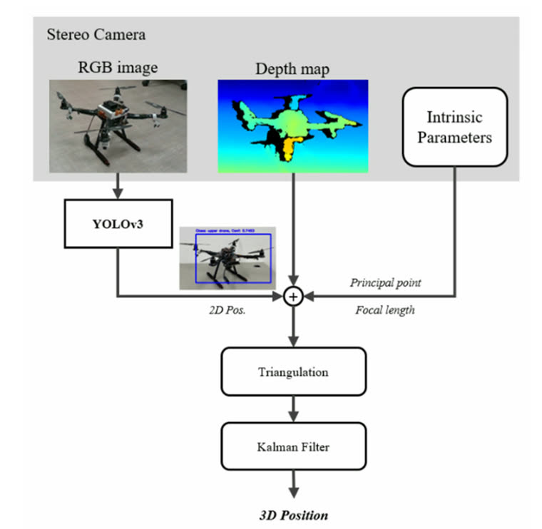
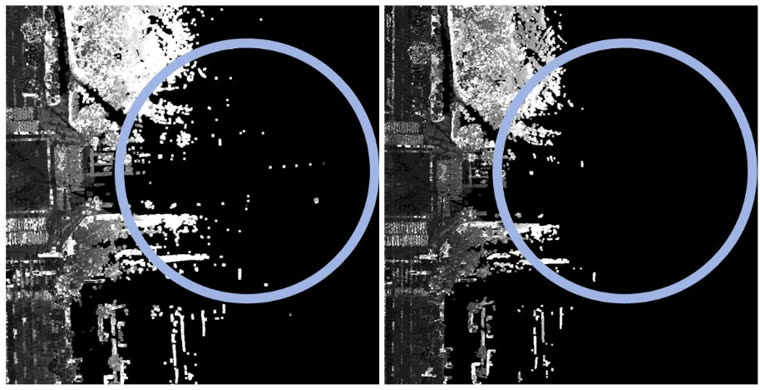
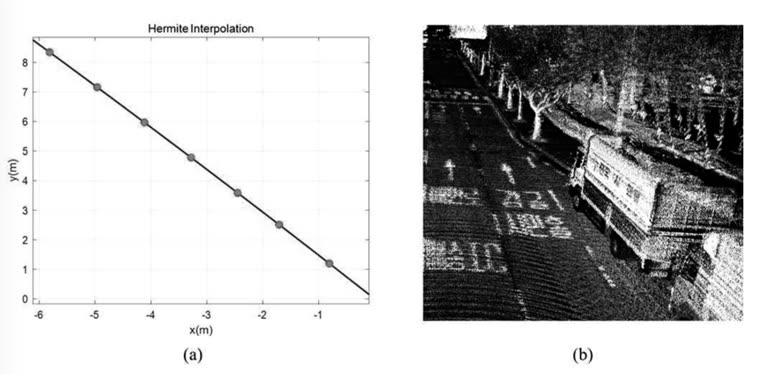
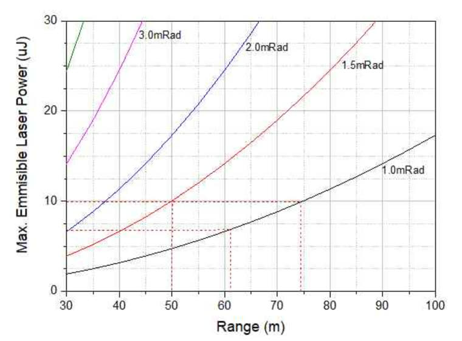
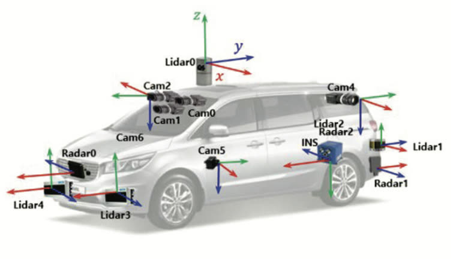
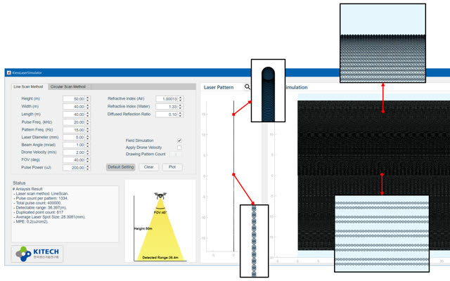
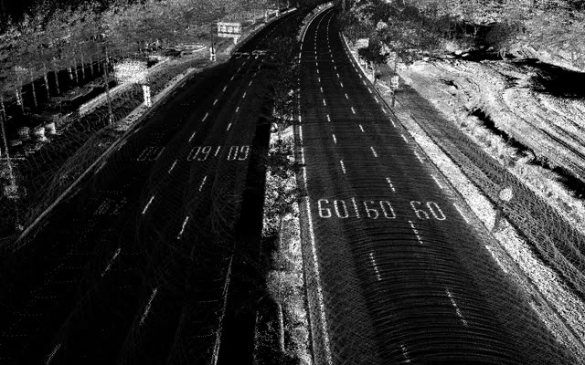
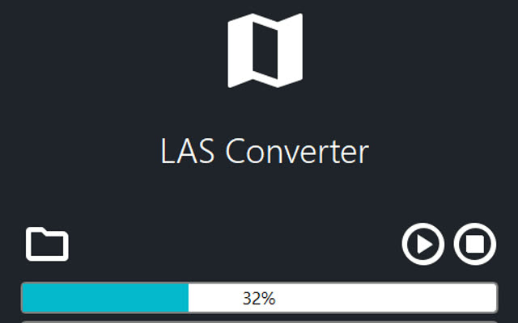

Publications
Journal Articles
2021

Development of a Faster R-CNN-based Marine Debris Detection Model for an Embedded System
Journal of Institute of Control, Robotics and Systems, 27(12), 1038–1043 (KCI)
2021

Development of a Three-Dimensional Indoor Position Estimation Algorithm for a Drone Using Stereo Vision and YOLOv3
Journal of Institute of Control, Robotics and Systems, 27(11), 845–850 (KCI)
2017
A Relaxed Stabilization Condition for Discrete T-S Fuzzy Model under Imperfect Premise Matching
Journal of Korean Institute of Intelligent Systems, 27(1), 59–64 (KCI, IF 0.47)
International Conferences
2017
Fuzzy Observer Design and Its Experimental Validation Using the Fuzzy Lyapunov Function
17th International Conference on Control, Automation and Systems (ICCAS), Jeju, Korea
2017
Fuzzy Lyapunov Function-based H∞ Fuzzy Filter Design for Sampled-data Systems under Imperfect Premise Matching
SICE Annual Conference, Kanazawa, Japan
2016
The Stabilization Condition of Continuous Affine Fuzzy Systems Under Imperfect Premise Matching
16th International Conference on Control, Automation and Systems (ICCAS), Gyeongju, Korea
2016
The Fuzzy Lyapunov Function-based Relaxed Stabilization of Output-feedback Fuzzy Control Systems Under Imperfect Premise Matching
International Conference on Fuzzy Theory and Its Applications (iFuzzy), Taichung, Taiwan
Domestic Conferences
2021

An Improvement Method for Global Mapping of Point Cloud Data Through the Statistical Outlier Removal
16th Korea Robotics Society Annual Conference (KRoC), Pyeongchang, Korea
2020

A Time Compensation Method for a Scanning LiDAR Sensor via Hermite Interpolation
KIIS Autumn Conference, 30(2)
2020

A Calibration Method for a 2D LiDAR Sensor and a Linear Encoder System Using Dihedral Angle
KIEE Conference on Information and Control Systems (CICS), Jeju, Korea
2020

Analysis of Design Parameters and Performance Simulation for a Bathymetric LiDAR Sensor
KSCE Convention, Drone Platform-based River Survey Special Session
2018

Korea Dataset for Autonomous Solution and the Acquisition System
KSAE Autumn Conference
2017
Fuzzy Output-feedback Controller Design for T-S Fuzzy Models based on Improved Fuzzy Lyapunov Functions under Imperfect Premise Matching
ICROS Annual Conference, Sokcho, Korea
2017
Output-feedback Controller Design for T-S Fuzzy Models based on Fuzzy Lyapunov Functions: Guaranteed-cost Approach
KIIS Spring Conference, 27(1)
2017
The Relaxed Stabilization Condition for the Affine T-S Fuzzy Systems via Improved Fuzzy Lyapunov Functions: Guaranteed Cost Approach
KIEE Summer Conference, 48th
2016
Fuzzy Output-feedback Control Design for T-S Fuzzy Models under Imperfect Premise Matching
KIEE Conference on Information and Control Systems (CICS)
2016
Stabilization for the T-S Fuzzy Systems Using the Line-integral Fuzzy Lyapunov Function
KIIS Spring Conference, 26(1)
2016
A Relaxed Stabilization Condition for Discrete T-S Fuzzy Model under Imperfect Premise Matching
KIIS Autumn Conference (Best Paper Award; later extended into the 2017 JKIIS article)
Patents
Apparatus and Method for Processing Trajectory DataApplication
System For Processing Data Required For Object Detection Based On Artificial Intelligence and Multiple Autonomous Driving Sensors and Method Implementing The SameApplication
Apparatus For Controlling Vehicle and Method ThereofApplication
System and Method For Calibrating 3D Sensor Coordinate Based On Scene Flow NetworkApplication
System and Method For Adaptive Calibration For Autonomous DrivingApplication
3D Vehicle Shape Data Acquisition Method and System for Automated Car Wash EquipmentRegistered
3D Vehicle Shape Data Acquisition Method and System for Automated Car Wash Equipment, Rotating LiDAR ConfigurationRegistered
Software Copyrights

Laser Beam Characteristics Evaluation Program

LiDAR Sensor Data Viewer Program

LAS File Conversion Program
NovAtel GNSS Data Reception Firmware for TI ARM Processor
Range Data Acquisition Firmware for DSP Processor
PRU Firmware for Motor Speed Control and Rotation Angle Detection on TI DSP
CAN and Serial Communication API Driver for TI DSP
Epson IMU Data Reception Firmware for PRU Processor